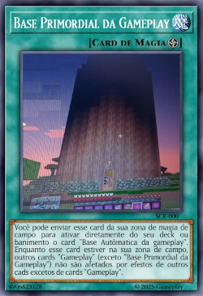
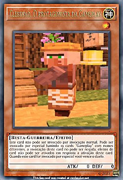
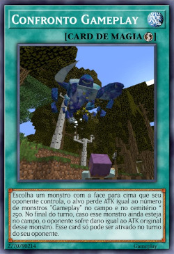
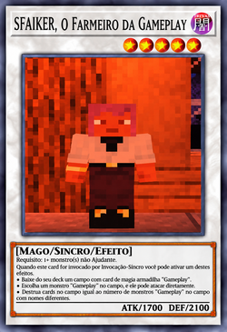
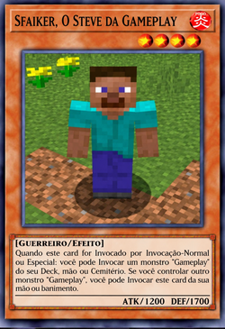

Quebra do tempo na Gameplay

Ative esse card para quebrar o tempo na Gameplay.
Troca de Pele na Gameplay

Ofereça 1 monstro "GAMEPLAY" como Tributo; Invoque por Invocação-Especial 1 "GAMEPLAY" com nome diferente do Tributo, do Deck ou Cemitério. Você só pode Invocar "GAMEPLAY" neste turno. Só pode ativar 1 "Troca de Pele na Gameplay" por turno.
Base Primordial da Gameplay

Você pode enviar este card da sua Zona de Magia de Campo para ativar diretamente do seu Deck ou Banimento o card “Base Automática da Gameplay”. Enquanto este card estiver na sua Zona de Campo, outros cards “Gameplay”, exceto “Base Primordial da Gameplay”, não serão afetados por efeitos de outros cards, exceto os cards “Gameplay”.
Clebinho, O Protagonista da Gameplay

Este card não pode ser Invocado por Invocação-Normal. Deve ser Invocado por Invocação-Especial, banindo 10 cards “Gameplay” com nomes diferentes. A Invocação deste card não pode ser negada, e os efeitos de cards não podem ser ativados em resposta à sua Invocação deste card. Se este card for Invocado por Invocação-Especial, você vence o Duelo.
Confronto Gameplay

Escolha um monstro com a face para cima que seu oponente controla, o alvo perde ATK igual ao número de mostros "Gameplay" no campo e no cemitério * 250. No final do turno, caso esse monstro ainda esteja no campo, o oponente sofre dano igual ao ATK original desse monstro. Esse card só pode ser ativado no turno do oponente.
Sfaiker, O Farmeiro da Gameplay

1 Regulador + 1+ monstros não-Reguladores Quando este card for invocado por invocação-Sincro você pode ativar um destes efeitos: * Baixe do seu deck um card de magia/armadilha "Gameplay". * Escolha um monstro "Gameplay" no campo, ele pode atacar diretamente. * Destrua cards no campo igual ao número de monstros "Gameplay" no campo com nomes diferentes.
Sfaiker, O Steve da Gameplay

Quando este card for invocado por invocação-Normal ou Especial: você pode invocar um monstro "Gameplay" do seu deck, mão ou cemitério. Se você controlar um outro monstro "Gameplay" você pode invocar esse card da sua mão ou banimento.